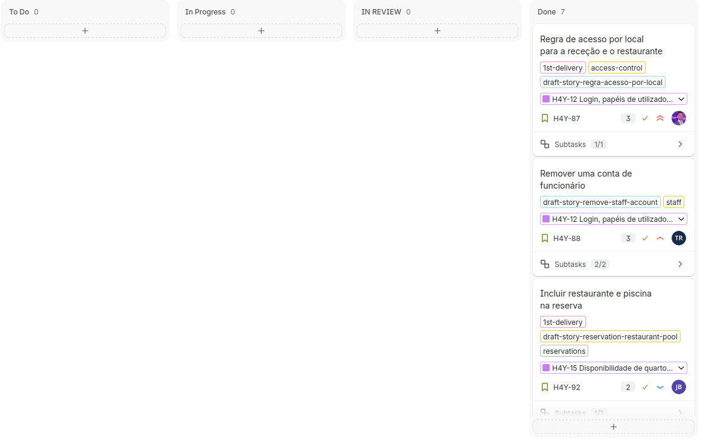

Sprint Retrospective - Sprint 6
📋 Visão geral
| Data | 20/11/2026 |
| Equipa | Grupo 1 |
| Participantes | Lukas Sperandio, Pedro Costa, António Martinho, Tiago Borja, José Cruz |
💭 Retrospetiva
| Começar a fazer | Parar de fazer | Continuar a fazer |
|---|
- Equipa: Entregar os ficheiros da entrega apenas em PDF
- Equipa: Fechar e entregar a retrospetiva no último dia de cada sprint, logo a seguir à sprint review
| - Pedro: Falhar a entrega da retrospetiva (a da Sprint 5 ficou por entregar). Não pode voltar a acontecer
- Equipa: Juntar na mesma história regras de acesso de papéis diferentes (a H4Y-87 junta a receção e o restaurante)
| - António: A sprint correu muito bem, com uma sprint review limpa
- Tiago: Boa comunicação e entreajuda, com todas as histórias entregues dentro do prazo
- Pedro: Sprint limpa e boa colaboração da equipa
- Equipa: Fechar a sprint sem carry-over (as 7 histórias ficaram Done no Jira)
|
🗣️ Feedback do cliente
- A retrospetiva da Sprint 5 não foi entregue
✅ Ações a tomar
- Separar a H4Y-87 em duas histórias: a regra de acesso da receção (pisos 0 e 1) e a regra de acesso do restaurante (cozinha e restaurante)
- Na remoção de um funcionário, fazer soft-delete: a conta fica inativa e não é apagada da base de dados
- Importar o stock dos fornecedores por ficheiro XML. O ficheiro JSON fica para o fim, se sobrar tempo
- Cartões: o cliente só pode iniciar sessão depois de o check-in ser feito
- Entregar os ficheiros da entrega apenas em PDF
- Entregar a retrospetiva da Sprint 7 no último dia da sprint
📌 Backlog da sprint
Comprometido: 21 pontos em 7 histórias. Done no Jira: H4Y-87 (3), H4Y-88 (3), H4Y-89 (2), H4Y-90 (3), H4Y-91 (5), H4Y-92 (2) e H4Y-93 (3) = 21 pontos. Velocidade: 21 pontos. Sem carry-over para a Sprint 7.

Created by: antonioprmartinho. Updated by: antonioprmartinho. AI use: run-retro, Claude Code (claude-opus-5-5), 2026-11-21. Reviewed by: pending.